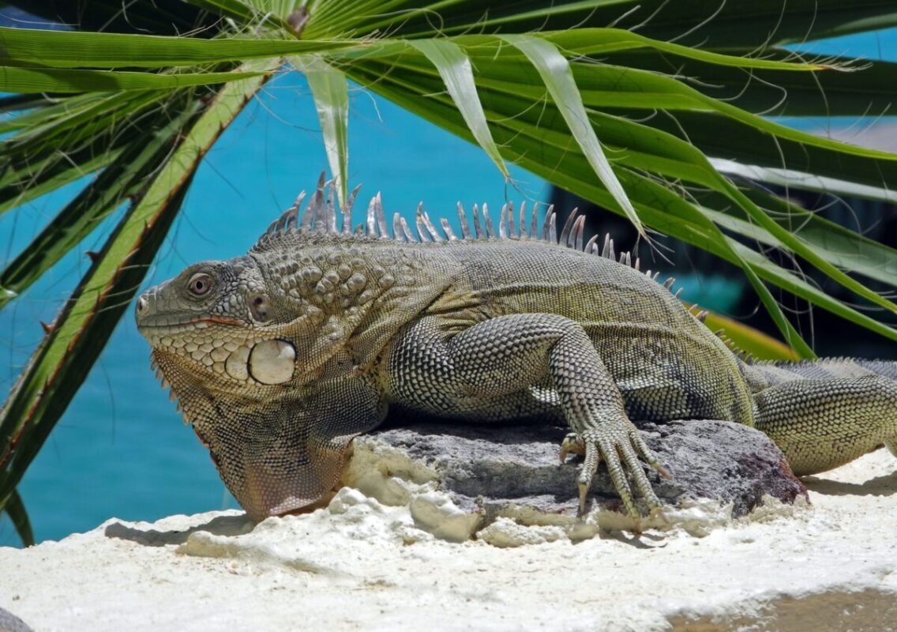

اگه شما هم به نگه داشتن خزندگان علاقه دارین و براتون مهمه که حیوونتون در عین ساکت و کم دردسر بودن ظاهر جذابی داشته باشه، این مقاله برای شماست. نگهداری از ایگوانا در سراسر جهان شایع شده اما متاسفانه بخاطر آگاه نبودن صاحبین از نیازهای این خزنده و نگهداری نامناسب، یا باعث تلف شدن تعداد زیادی ایگوانا میشه یا روانه شدنشون به پناهگاهها؛ بنابراین اگه علاقه دارین از ایگوانا بیشتر بدونین در ادامه همراهمون باشین تا نکات مهم رو یاد بگیرین.
ایگوانا چیه؟ از کجا اومده؟
شاید درنگاه اول به نظر بیاد ایگوانا ربطی به دایناسور و اژدها داشته باشه اما اون هیچی نیست بجز یه مارمولک معمولی در اندازه ی بزرگ!
ایگواناها با نام علمی Iguana iguana همون ایگوانای سبز که بهعنوان پت شناخته شده هستن. یه دلیل دیگه هم که اسم ایگوانا، «ایگوانا» شده شباهتیه که به دایناسور منقرض شدهی «ایگوانادون» داشته.
درسته که اسم این گروه بزرگ ایگوانای سبز هست، ولی فقط به رنگ سبز نیستن و تنوع رنگی ایگوانا از قهوهای تا ایگوانا قرمز و صورتی و آبی متغیره!

ویژگیهای ظاهری ایگوانا
- بارزترین ویژگی ظاهری این مارمولک، افزایش سایز بیش از حدشه. ایگوانای کوچولوی بامزهای که خریداری میکنین تا بلوغش میتونه به طولی حدود یک متر و ۸۰ سانتیمتر با وزنی حدود ۹ کیلو برسه؛ چیزی معادل استاندارد های تمساح!
- یکی از اعضایی که باعث این طول بلندش شده دمش هست. این طول بلند میتونه به عنوان یه عضو دفاعی به کمکش بیاد؛ درست مثل شلاق.
- پشت بدن اون هااز سر تا نوک دم خارهایی بیرون زده که غیر از زیبایی نقش دفاعی هم دارن.
- در زیرناحیه حدودی گوش این خزنده، فلسهای بزرگش کاملا به چشم میان.
- یه چین خوردگی پوستی زیر چونشون وجود داره (Dewlap) که چندتا کار انجام میده: بیان احساسات مختلف، تنظیم حرارت و رفتارهای تولیدمثلی
- چنگال و دندونای تیز این مارمولک هم موردیه که لازمه مراقبش باشین، البته با وجود دندون تیز قابلیت جویدن غذارو ندارن و باید غذاشون بافت ریز باشه. ناخنها هم میشه کوتاه بشن.
- قابلیت تغییر رنگ بدنشون رو دارن.
- ساختار سفیدرنگی که بین دوچشم به “چشم سوم ایگوانا” معروفه از گیرندههای دریافتکنندهی نور تشکیل شده و تصویر واضحی نشون نمیده؛ صرفا با تشخیص نور و تاریکی در تشخیص حرکت اطراف بهش کمک میکنه.

نکات مثبت و منفی نگهداری ایگوانا
- عمر طولانی
- تمیز
- منظم و منضبط
- ساکت
- ذاتا گیاهخوار (تهیه راحت غذای موردنیاز)
- باهوش
- افزایش اندازه سریع و مشکلات کمبود جا
- شخصیت خسته کننده وتنبل
- نامناسب برای بچهها، پتهای کوچک و سایر خزندگان
- نگهداری ریسکی برای تازه واردها
- فراری از بغل و نوازش
- شاید وقتگیر بودن اهلی و دستی شدن
- حتی در حالت اهلی هم رفتار غیرقابل پیش بینی
نگهداری اصولی ایگوانا
محل نگهداری
شاید برای یکی دو سال اول بتونین ایگواناتون رو داخل تراریوم نگه دارین اما بخاطر سرعت رشد زیادش باید به فکر جای جدید باشین؛ اکثرا قفسهای تجاری در اندازه موردنیاز به ندرت تولید میشه پس لازمه خودتون دست به کار شین:
فضا
- حداقل فضایی که این خزنده بهش نیاز داره به طول ۵.۵، عرض ۱ و ارتفاع ۲ متر هست؛ چیزی معادل ۱۱ مترمکعب. میتونین کمد، قسمتی یا کل یه اتاق رو دراختیارش بذارین.
- برای ساخت دیوارهها میتونین از چوب، توری سیمی و پلکسی گلس استفاده کنین. ترجیحا سه دیواره از جنس چوب و ورودی از توری سیمی باشه.
تراریوم شیشهای تهویه خوب رو برایش فراهم نمیکنه و در هوای شرجی میتونه باعث کپک زدگی در محیط بشه.
دما و رطوبت
- چون به آب و هوای گرمسیری و معتدل عادت داره دمای محیطش باید مشابه طبیعتش باشه؛ یعنی در روز ۲۶.۵ تا ۳۲.۲ و در شب دمای ۲۳.۸ نیاز داره. بنابراین به منبع گرمایشی نیازه.
دقت کنین محصولاتی مثل سنگ گرمایشی بخاطر توزیع نامساوی حرارت میتونه باعث سوختگی بشه.
- غیر از دما رطوبت محیط هم باید در حد ۷۰ الی ۸۰ درصد باشه، برای این کار دوتا راه حل دارین: اسپری کردن روی بدن ایگوانا دوبار در روز و یا قرار دادن ظرف آب داخل تراریوم یا محل نگهداری.
اهمیت رطوبت محیط به این خاطره که آبرسانی بدن ایگوانا از سطح پوستش انجام میشه و در کنترل گرمازدگی کمکش میکنه.
- اگه دمای شب کمتر از ۲۱ درجه سانتیگراد باشه برای تامین حرارت میتونین از لامپهای مادون قرمز و یا حرارتی سرامیکی استفاده کنین که نورشون باعث آزردنش نمیشه.

نور
- یه ایگوانا باید ۱۲ ساعت نور روزانه دریافت کنه، اونم نه از پشت شیشه. برای دریافت این میزان غیر از نور خورشید، استفاده از لامپ UV توصیه میشه که غیر از تامین نور مقداری حرارت هم برای ایگواناتون تامین میکنه.
علاقه مندیها
- این خزنده عاشق ارتفاعاته بنابراین حتما براش شاخ و برگ، تخته و چوب در نقاط بلند فراهم کنین.
- ایگواناها عاشق آفتاب گرفتنن و اکثر موقع روز رو درحال چرت زدن زیر آفتابن. دقت کنین حتما سایه هم براش فراهم کنین.
- بعضی از اونا آبتنی رو هم دوست دارن بنابراین ممنونتون میشن اگه براشون یه لگن آب بزرگ بذارین، خصوصا اینکه علاقه دارن از شاخهها داخل ظرف آب بپرن بنابراین حتما ظرفش بزرگ باشه.
از اونجا که ایگوانا خزنده هست و خونسرده تنظیم دمای بدنش وابسته به دمای محیطه. بنابراین توی محیط زندگیش باید شیب دمایی باشه، به اینصورت که بتونه از منطقه دمایی گرمتر به خنکتر جابجا بشه.
بستر
- بستری که برای این حیوان خونگی درنظر میگیرین میتونه به سادگی تکه روزنامه و دستمال کاغذی تا علف ریزشده باشه؛ چون ایگوانا تایم زیادی رو در کف نمیگذرونه و اکثرا در ارتفاعاته.
- جعبهی چوبی برای قایم شدنش رو فراموش نکنین!

نظافت
تمیز کردن ظروف غذا، آب و بستر باید روزانه و تمیز بشه و شستوشوی تراریوم باید ماهانه انجام بشه:
- ابتدا با مایع ظرفشویی ملایم رقیق شده در آب گرم
- سپس با ترکیب سرکه و آب به نسبت ۱:۸ یا وایتکس و آب به نسبت ۱:۳۲ قفس و وسایل سابیده شوند.
- درنهایت تمامی وسایل باید به دقت آبکشی شوند تا ماده ضدعفونی روی وسایل باقی نماند.
به هیچ عنوان سرکه و وایتکس رو باهم ترکیب نکنین چرا که ماده سمی ایجاد میشود.
تغذیه
جالبه بدونین که ایگوانا با این ابهتش یه گیاهخوار سفت و سخته! در طول روز باید میزان زیادی از سبزیجات و برگ تازه به همراه مقدار کمتری میوه نوش جان کنن چون میوه زیاد باعث شل شدن مدفوع میشه.
این خزنده ها قدرت جویدن غذاشونو ندارن برای همین باید غذاشون بصورت خرد و تکه شده در اختیارشون قرار بگیره.
در ادامه لیست مواردی که این حیوان خانگی میتونه بخوره و بهتون معرفی میکنم:
سبزیجات
- کاهو، کلم و هرآنچه در خانواده کلمیان با برگ سبز تیره و ساقهی ضخیم است.
- کاهو کیل (Kale)
- لوبیا سبز
- آسپاراگوس
- نخود فرنگی
- شلغم
- یونجه
- جعفری
- بوک چوی (کلم چینی)
- سبزی خردل
- کدو
- هویج خرد شده
- ذرت
- جوانهها
- سیب زمینی شیرین
- فلفل دلمه ای سبز و قرمز
سبزیجاتی مثل کاهو کیل، بروسل، بروکلی، کلم و گل کلم بخاطر داشتن آنزیمی که به ید متصل میشه و کمبودش رو ایجاد میکنه باید گاهی اوقات مصرف بشن.
میوه
- موز
- توت فرنگی
- بلوبری
- سیب
- طالبی و گرمک
- پاپایا
- مانگو
ایگوانای شما اجازهی خوردن مواردی مثل اسفناج، چغندر و روبارب (ریواس یا ریوند چینی) رو نداره.
جالبه بدونین اونا بعضی گلهارو هم بعنوان خوراکی مصرف میکنن مثل:
- برگ کاکتوس
- رز
- میخک صد پر
- لادن
- هیبیسکوس
- قاصدک

برنامه استاندارد تغذیه ایگوانا
ایگوانا باتوجه به نیاز شدیدی که به تامین کلسیم و فسفر برای سلامت استخوناش داره باید حتما برنامه غذایی مناسبی داشته باشه. دراین برنامه لازمه رعایت کنین که بیشترین قسمت غذاش از سبزیجات و برگ تازه و پرخاصیت تامین بشه و بعد با میزان کمتری میوه.
کاهوی آیس برگ (همون کاهو سالادی خودمون) ارزش غذایی خاصی نداره بنابراین استفاده ازش ضرورت خاصی نداره.
- ۵۰ تا ۶۰% غذای ایگوانا از سبزیجات با برگ سبز تیره تشکیل شده.
- ۳۰ تا ۴۰% غذاش رو سبزیجات ترکیبی مثل کدو، جوانهها، سیب زمینی شیرین، فلفل دلمهای سبز و قرمز، لوبیا، لوبیا سبز، نخود، نخود فرنگی و ذرت تشکیل میدن.
- ۱۰ تا ۱۵% هم به میوهها اختصاص داده میشه.
- درکنار این موارد لازمه غذای تجاری (پلت) بصورت مرطوب شده، مکمل کلسیم و ویتامین د و مولتی ویتامین یکبار در هفته دراختیارشون قرار بگیره. دقت کنین این مکملها اکثرا به شکل پودر هستن که روی غذا بریزین و باید در اندازه کم مصرف بشن.
مصرف مکمل خصوصا در تغذیه ایگوانای نابالغ درحال رشد و آبستن توصیه میشه.
- میتونین گاهی اوقات نان هفت غله و حبوبات، پاستا و برنج پخته هم در اختیارش بذارین.
مهمترین نکته در تغذیه ایگوانا اینه که به هیچ عنوان نباید گوشت، فرآوردههای گوشتی، لبنیات و حتی حشرات مصرف کنن. اول اینکه چون به پروتئین نیازی ندارن و دوم اینکه بدنشون قابلیت هضم هیچ ماده ای غیر از گیاهان رو نداره.
بنابراین مصرف حتی یک مقدار غذای خشک گربه باعث حتمی بودن نارسایی کلیه در ایگواناتون میشه.
- همیشه مقدار زیادی آب در چند ظروف سنگین یا چسبی برای ایگواناتون قرار بدین. دقت کنین که آب مصرفی کلرو فلزات سنگین نداشته باشه.
ایگواناهای نابالغ ممکنه مدفوع ایگواناهای بزرگسال رو بخورن تا میکروبهای مفید و ضروری گوارشی رو ازشون دریافت کنن!

رفتارشناسی ایگوانا
ایگواناها از روشهای مختلفی برای نشون دادن احساسات عصبانیت، ترس و استرس، کلافگی، خوشحالی و رضایت استفاده میکنن:
گاز گرفتن
این حرکت که نشونه ترس و اضطراب هست معمولا اولین علامت هم نیست بنابراین باید سایر علائم ترس و اضطراب رو قبل گاز گرفتن ایگواناتون شناسایی کنین.
چنگ و لگد زدن
ایگواناها از چنگالشون برای گرفتن و نگه داشتن اشیا استفاده میکنن بنابراین اگه چنگ زده شدین بدونین اتفاقی بوده و ایگواناتون قصد آسیب بهتون رو نداشته اگه اما ایگوانا بهتون لگد زد بدونین یه موضوعی باعث احساس ناراحتیش شده.
چین خوردگی پوستی Dewlap
این چین خوردگی که زیر چانه قرار داره همراه با رفتارهای مختلف دیگه برای سلام کردن، یا نشون دادن سلطه گری و ناراحتی استفاده میشه.
چشمها
بیان احساسات ایگوانا از طریق چشم سه حالت داره:
- بسته: خوشحالی و ریلکس بودن
- خیره، مردمک متسع و نگاه شیطانی: ناراحت بودن
- باز و خیره: کنجکاوی

سر
تکان دادن سر حرکتی هست که بین ایگوانا و خزندگان دیگه شایعه. اما چه معنی داره؟
- آرام: سلام کردن
- تند و شدید: ناراحت و عصبانی بودن
دهان
- باز: احساس گرما یا ناراحت بودن
- کمی باز: کنجکاوی
پوست
همونطور که اول مقاله گفتم، پوست ایگواناها قابلیت تغییر رنگ داره و ازش برای تنظیم حرارت یا بیان احساسات ناراحتی، عصبانیت و ترس استفاده میکنن:
- رنگ روشن: یا محیط گرمای کافی داره، یا اینکه زیادی گرمه و با روشن کردنشون میخوان خنک بشن.
- رنگ تیره: محیط سرده و با تیره کردن خودشون حرارت رو جذب میکنن.
دم
دم بلند ایگوانا بهعنوان وسیلهای برای دفاع خیلی به کمکش میاد؛ چون ازش به شکل شلاق استفاده میکنه و اگر ضربه محکمی بزنه حتی میتونه باعث شکستن استخوان انسان بشه!
نگران نباشین! ایگوانا به همین راحتی عصبانی نمیشه مگه اینکه شما خیلی تحت فشار بذارینش و کاسه صبرش رو لبریز کنین. ممکنه در فرایند اهلی و دستی کردنش این شلاق رو با شدت کمتر تجربه کنین.
خاصیت جالب دم ایگوانا در اینه که درموارد استرس شدید و تهدید قابل افتادنه! به مرور زمان میتونه رشد کنه ولی به بلندی و زیبایی بار اولش نمیرسه؛ بنابراین هیچوقت ایگوانارو از دم بلند نکنین.

اهلی و دستی کردن ایگوانا
ایگوانا مثل سگ و گربه اهلی نمیشه و تا حدی وحشی باقی میمونه و ترس از شکار شدن داره بنابراین پروسه آموزش دادنش ممکنه سختتر باشه:
- سازش پذیری: اونها رو نباید ناگهانی دست بگیرین و بغلش کنین؛ لازمه ۱ الی ۲ هفته بهش زمان بدین تا به محیط جدیدش عادت کنه و استرس نداشته باشه.
- آرامش: وقتی ایگوانا در محیط جدیدش احساس آرامش داشته باشه سریعتر خودشو وفق میده؛ بنابراین نترسونینش، صدای بلند و حرکت ناگهانی از خودتون نشون ندین و مدام در تلاش نباشین که بلندش کنین.
آروم بودن شما هم باعث میشه آرامش پیدا کنه چون حسش میکنه.
- غذای دستی: وقتی غذای موردعلاقش رو از دستتون بهش بدین به داشتن حس امنیتش کمک میکنه حتی اگه غذارو نخوره باعث میشه به حضور شما عادت کنه.
- مقید کردن: وقتی میخواین ایگوانا رو بلند کنین نباید سریع باشه، وقتی هم بغلش میکنین دستتون زیر شکمش حائل بشه. دقت کنین ایگوانا بغلی نیست ولی تا حدی برای اهلی کردنش میتونین بغل و نوازشش کنین.
گاهی اوقات دستتون رو داخل قفس ببرین یا تلاش کنین که نوازشش کنین تا بهتون عادت کنه. نوازش کردنش حتما در جهت فلسهاش انجام بشه.

- آزادی: این خیلی مهمه که تایمی از روز رو برای گردش و آزاد بودن ایگواناتون اختصاص بدین، از قفس اون رو به اتاق کوچیک بیارین و موقع گردش و کنجکاویش نظارت داشته باشین.
ایگوانارو نباید دائمی آزاد بذارین؛ غیر اینکه ممکنه موقع کنجکاوی به خودش آسیب بزنه، رطوبت، حرارت و نور کافی ممکنه بهش نرسه و مهمتر از همه کار اهلی کردنش رو سختتر میکنه.
- تداوم: واقعا لازمه که برای اهلی شدنش روزانه حتی چند دقیقه برای نوازش و اهلی کردنش وقت بذارین و با رعایت کردن تمامی موارد بالا باعث نتیجه بخشی در فرایند اهلی کردنش بشین.
نکته مهمی که باید رعایت کنین اینه که ایگوانا هم مثل بقیه خزندگان قابلیت انتقال بیماری سالمونلوز رو به انسان دارن بنابراین حتما باید بعد از هربار تماس با ایگوانا دستتون رو بشورین و نظافت رو رعایت کنین.
بیماری و مشکلات شایع ایگوانا
ایگوانای سالم چه ویژگیهایی داره؟
قبل از توضیح دادن بیماریهای شایع، بهتره بدونین یه ایگوانای سالم چه شکلیه:
- پوست نرم و یکدست
- نبودن اثری از جرب (نقاط قرمز کوچیک خصوصا اطراف بینی، گوش و چشم)
- چشم شفاف و تمیز
- خط چانه صاف
- تغذیه و دفع منظم
این حبوانات منظم هستن و در تایم خاصی از روز غذا میخورن و دفع دارن؛ بنابراین نوشتن گزارش از این عاداتشون در طولانی مدت اگه مشکلی براشون پیش بیاد به دامپزشکشون در تشخیص کمک میکنه.
شکستگی استخوان و دم
معمولا وقتی اشتباهی زیر پا یا لای در بمونن یا دمشون درجایی گیر کنه این اتفاق میافته. علائم:
- لنگیدن
- تورم اندام
- موقعیت و شکل غیرعادی بدن
شکستگی ناخن نشونه بلند شدن زیاد از حد ناخنه و لازمه مداوم ناخن گیریشون انجام بشه.
سوختگی
معمولا در اثر تمای نزدیک با لامپهای حرارتی و منابع گرمایشی با علائم:
- درد داشتن به همراه ترشح
- تغییر رنگ پوست
درصورت تاخیر در درمان سوختگی، زمینه برای بروز عفونت فراهم میشه و درمان رو طولانی و چالش برانگیزتر میکنه.
بریدگی و خراشیدگی
حین گردش و کنجکاوی شایع هست.
کم آبی و گرمازدگی
با وجود اینکه خزندگان و پرندگان نسبت به گرمای محیط مقاوم ترن، اگه نکات لازم براشون رعایت نشه اونا هم میتونن به گرمازدگی و کمبود آب بدنشون دچار بشن که علائمشون بطور خلاصه شامل:
- کاهش وزن
- پوست خشک و چروک
- چشم گود افتاده و فرورفته
- بیحالی
تخم ماندگی
عوامل مختلفی میتونن باعث این مشکل اورژانسی بشن که ساده ترینشون کمبود کلسیم جیره ی مادر، لونه نامناسب و تخم گذاری زیاد از حد هستن. علائم تخم ماندگی:
- تورم قوام دار شکم
- بیحالی و ضعف
- چشم گود افتاده و فرورفته
- بارداری مشخص بدون لانه گزینی
- سختی در دفع کردن
بیماری متابولیکی و کمبود تغذیه
همونطور که قبلا گفتم، برای سلامت استخوانش باید مقدار زیادی کلسیم و فسفر از غذاش دریافت کنه و کمبودش علائمی از این قبیل ایجاد میکنه:
- نرمی استخوان
- دفرمیتی و تغییر شکل اندام
- تورم اندام
- بیحالی
- سختی در غذا خوردن
- یبوست
- فلجی
انگل
انگلهای این خزنده هم میتونن داخل بدن باشن مثل تک یاخته و کرمهای پهن و گرد یا خارج از بدن باشن مثل کنه و جرب که نشونه های پوستی بروز میدن یا اینکه خود انگل رو در سطح بدن مشاهده میکنین. علائم انگلهای داخلی:
- بیحالی
- بیاشتهایی
- تنفس سریع و محو
- اختلال در رشد
- مدفوع غیرعادی
عفونت تنفسی
عفونت تنفسی ممکنه درصورتی بروز پیدا کنه که محیط سرد باشه. علائمش:
- بیحالی
- بیاشتهایی
- تنفس سریع و محو
- چشم بسته و ترشح دار
- آبریزش بینی همراه ترشحات
اگه بینی ایگواناتون بصورت مداوم ترشحات داره میتونه بخاطر رژیم نامناسبش باشه که باعث شده غدد نمکی بینی از مایع شور پر بشن و این ترشحات بروز پیدا کنن.

اختلال در پوست اندازی
پوست اندازی یعنی چی؟
در نابالغین هر ۴ الی ۶ هفته و در بالغین یکی دوبار در سال پوست جدید رشد میکنه و خودشو از لایه قبلی جدا میکنه. با جدا شدنش، لایه نازکی از مایع بینشون قرار میگیره و پوست به رنگ کدر و حالت برآمده میشه.ایگواناها برخلاف مار، تکه تکه پوست اندازی میکنن.
چی باعث میشه پوست اندازی به مشکل بربخوره؟
وقتی محیط زندگی این خزنده خشک باشه، این مایع شکل نامناسبی پیدا میکنه و باعث میشه پوست به سختی جدا بشه و حالت پوسته پوسته پیدا کنه.
اگه شرایط محیطش ایده آل باشه پوست اندازیش به قدری سریع اتفاق میافته که حتی شما متوجهش نمیشین چون سریع هم اون پوست رو میخوره!
درمان
برای حل این مشکل حمام آب گرم خیلی کمک کنندست و نباید شما پوستهارو بکنین.
موارد زیر برای این مارمولک خونگی اورژانسی هستن و لازمه که هرچه سریعتر به بیمارستان مراجعه کنین:
- سوختگی
- گرمازدگی
- سقوط از ارتفاع
- شکستگی
- انباشتگی مواد در سیستم گوارشی
- تخم ماندگی
- تکان دادن و لرزش مداوم و زیاد از حد سر
- تشنج
تولید مثل ایگوانا
ایگوآنا ها معمولا در فصول خشک جفت گیری میکنن تا مطمئن باشن بچه هاشون در فصل های بارانی که مواد غذایی به اندازه ی کافی هست از تخم در میان . سن بلوغ جنسی در نر از ۱.۵ تا ۷ سالگی و ماده از ۲ الی ۶ سالگی هست.
- نوع ماده بدون حضور نر هم میتونه تخم بذاره پس باید حواستون بهش باشه.
- در اوایل فصل خشکی تخم گذاری میکنن.
- در هر دورهی تخم گذاری۳۰ تا ۵۰ تخم گذاشته میشه.
- نوزادان ۷.۵ سانتیمتری بعد از ۷۰ الی ۱۰۵ روز از تخم درمیان.
نوع نر و ماده خارج از فصل تولیدمثلی نباید کنارهم نگه داشته بشن چون ایگوانای نر مدام میخواد جفتگیری کنه.
- جنس نر خصوصا در فصل تولیدمثلی خیلی غیرقابل پیش بینی میشن و ممکنه شمارو با رقیبشون اشتباه بگیرن!
این خزنده ها هیچ علاقهای به زندگی گروهی ندارن و نگهداری دو ایگوانا کنارهم توصیه نمیشه مگه اینکه قبل از ۶ ماهگی به هم عادت کرده باشن.
- نوزاد ایگوانا ممکنه نیاز داشته باشه حداقل دو بار در روز بهش غذا بدین.

نظر شما درباره ایگوانا چیه؟
در این مقاله سعی کردیم ویژگی و نکات کلی که در نگهداری ایگوانا کمکتون میکنه رو توضیح بدیم. شما تجربه نگهداری از ایگوانارو داشتین؟ سوالی درباره نگهداریش براتون مبهمه؟ ممنون میشیم نظراتتون رو در کامنت برامون ارسال کنین.